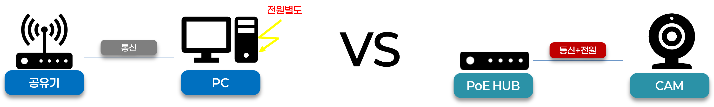
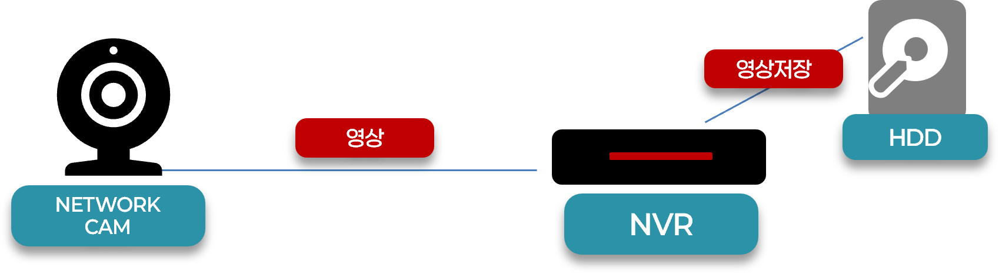
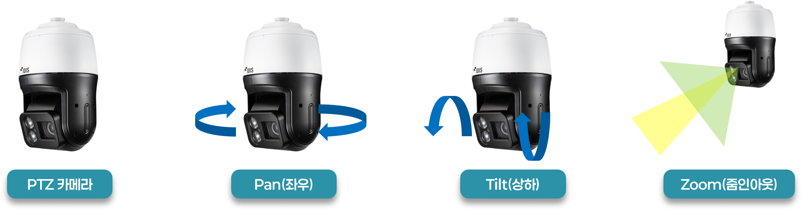
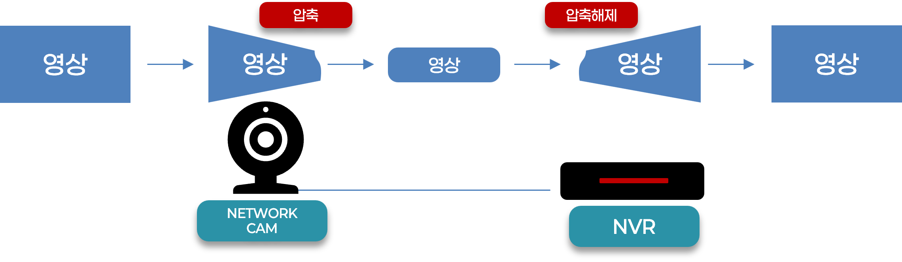
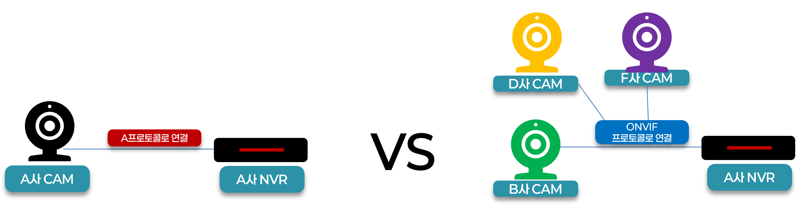
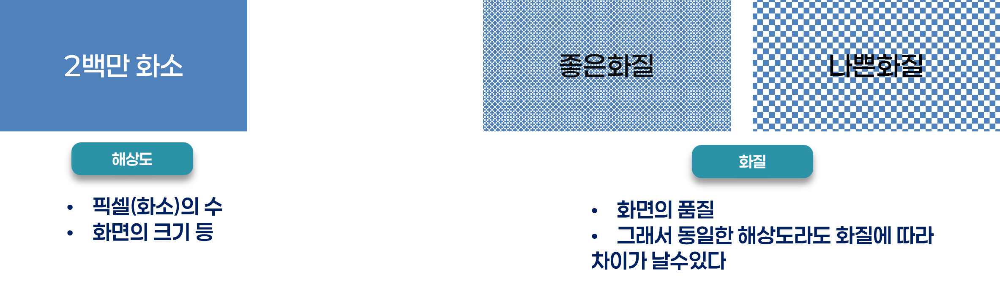

CCTV 필수 용어 10가지 < 누구나 이해할 수 있게 >
CCTV를 처음 접한 사람도, 보안 현장 실무자도, 기술을 설명해야 하는 영업사원도 한 번에 이해할 수 있도록 용어를 쉽게 풀어 설명합니다.
아래는 해상도, 렌즈, NVR 등 자주 쓰이는 핵심 용어에 대한 초등학생 / 대학생 / 직장인 수준의 3단계 설명입니다. 각 용어를 클릭하면 상세한 설명 페이지로 이동합니다.
| 용어 | 아주 쉽게 설명 | 일반인 설명 | 기술직 직장인 설명 |
|---|---|---|---|
| PoE | 전기랑 영상이 한 선으로 됨 | 랜선 하나로 전원과 데이터 함께 전송 | 배선 간소화에 유리하나 거리 제한(100m) 주의 |
| NVR | 카메라 영상 저장하는 기계. | IP카메라 영상 저장 장치 | PoE 지원 여부 중요, NAS 연동 가능 |
| IR LED | 어두워도 보이게 해주는 불빛! | 야간 흑백 촬영을 위한 적외선 조명 | 자동 전환/IR 거리 확인 필수 |
| PTZ | 제자리에서 화면 돌고 줌아웃도 되는 카메라! | 원격 회전 및 먼거리 줌 제어 | 오토트래킹/스케줄 회전 설정 가능 |
| CODEC | 영상을 작게 만들어서 저장! | 압축 포맷, 저장 공간 절약 | H.265 우선, NVR 호환성 확인 |
| ONVIF | 다른 회사 거랑도 같이 사용 | 장비 간 통신 규약 | 프로파일 종류별 기능 구분 필요 |
| Motion Detection | 움직이면 녹화! | 움직임 감지 기반 녹화 | 감도·객체 크기 필터 설정 중요 |
| Bitrate | 얼마나 많이 영상이 가는지 확인! | 초당 전송량, 화질과 저장에 영향 | CBR/VBR 설정, 네트워크 트래픽 고려 |
| 고정/가변 렌즈 | 줌 되는 렌즈가 있고 아닌 것도 있음! | Varifocal: 거리 조절 가능, Fixed: 고정 | 설치 전 거리 확인 후 렌즈 선택 필수 |
| 해상도 vs 화질 | 점이 많으면 더 잘 보여.이게 해상도! | 해상도는 화면 크기, 화질은 전체 느낌 | 해상도 외에도 노이즈, 압축률 포함 고려 |
이 페이지가 도움되셨나요?
👉 더 많은 기술 콘텐츠 보러 가기PoE (Power over Ethernet)
PoE는 Power over Ethernet의 약자입니다. 하나의 랜선(UTP 케이블)으로 전원과 데이터를 동시에 공급하는 기술로, CCTV 설치 시 전기선 없이 간편하게 연결할 수 있습니다. IEEE 802.3af/at 표준이 있으며, 설치가 간단하고 비용이 줄어드는 장점이 있지만, 거리 제한(약 100m)을 고려해야 합니다.
NVR (Network Video Recorder)
NVR은 네트워크 영상 저장장치로, IP 카메라로부터 영상 데이터를 수신하고 저장합니다. 대부분 HDD 또는 NAS와 연결되며, PoE 포트를 내장한 모델은 카메라 전원 공급도 가능합니다.
IR LED (Infrared Light Emitting Diode)
IR LED는 적외선 발광 다이오드로, 야간이나 어두운 곳에서도 흑백 영상 촬영을 가능하게 해주는 기술입니다. 감지 거리, 자동 전환 여부가 주요 선택 기준입니다.

PTZ (Pan Tilt Zoom)
PTZ는 카메라의 회전(Pan), 상하 기울기(Tilt), 줌(Zoom) 기능을 의미합니다. 원격으로 카메라를 조작할 수 있으며, 자동순환, 프리셋, 오토트래킹 등의 고급 기능도 포함됩니다.
CODEC (Compressor Decompressor)
CODEC은 압축·해제 방식으로, 영상 데이터를 저장하거나 전송할 때 용량을 줄이기 위한 기술입니다. 대표적으로 H.264, H.265가 있으며, 후자는 더 고효율 압축이 가능합니다.
ONVIF (Open Network Video Interface Forum)
ONVIF는 IP 기반 보안 장비 간 호환성을 보장하기 위한 표준 프로토콜입니다. 다양한 제조사의 장비를 하나의 시스템에서 연결하고 통합할 수 있게 해줍니다.
Motion Detection (움직임 감지)
Motion Detection은 영상에서 움직임이 발생할 경우 이를 감지하여 자동 녹화하거나 알람을 발생시키는 기능입니다. 민감도, 크기, 구역 설정 등을 통해 오탐을 줄일 수 있습니다.

Bitrate (비트레이트)
Bitrate는 초당 데이터 전송량을 의미하며, 보통 Kbps 또는 Mbps 단위로 표시됩니다. 값이 클수록 화질이 좋아지지만 저장 용량과 대역폭을 더 많이 차지합니다. CBR(고정), VBR(가변) 설정이 있습니다.

고정/가변 렌즈 (Fixed / Varifocal Lens)
고정 렌즈는 특정 화각으로만 촬영 가능한 반면, 가변 렌즈는 설치 후 초점 거리(화각)를 조절할 수 있습니다. 설치 거리와 시야각 요구에 따라 선택되며, 고정형은 간단하고 저렴한 장점이 있습니다.

해상도 vs 화질 (Resolution vs Image Quality)
해상도는 영상의 픽셀 수(예: 1920x1080)를 의미하며, 선명도와 화면 크기에 영향을 줍니다. 반면 화질은 압축, 노이즈, 색감, 밝기 등을 포함한 종합적인 시각적 품질을 의미합니다.
